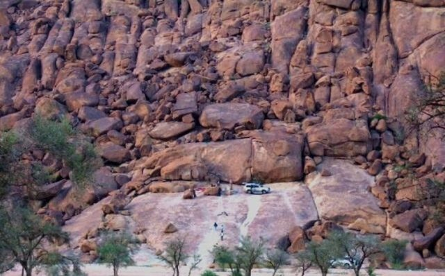
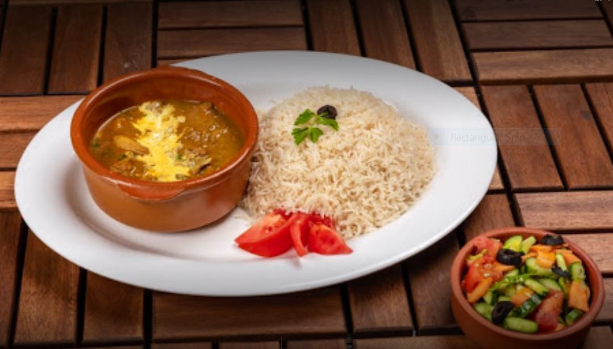

المعالم السياحية
متحف حائل أحد أجمل أماكن السياحة في حائل . يتكون المتحف من صالات عرض متنوعة، تُقدم جوانب الحياة القديمة بها، و الجوانب التاريخية و الثقافية الهامة لها. و بها قاعة لعرض التاريخ الإسلامي، من تراث و أحداث من خلال الوثائق التاريخية، و اللوحات الأثرية و الصور.كما يوجد به قاعة للتاريخ الجيولوجي،التي تعرض للسياح و الزوار، تاريخ حائل الجغرافي ومنها: بعض أماكن التعدين – عينات من صخور حائل – التراث البيئي – الحيوانات – النباتات و غيرها”. و يمكنك التجول بين هذه القاعات الكثيرة والمختلفة بالمتحف، و تمتع بإستكشاف تاريخ وتراث المنطقة
يتميز منتزه مشار الوطني، بإنه عبارة عن وادي أخضر مُميز جداً للعائلات السعودية و الزوار من جميع البلدان، فهو من أجمل اماكن السياحة في حائل. يتميز بتضاريسه الطبيعية الخلابة، التي تمتاز بها مدينة حائل بأكملها، و لديه أيضًا مجموعة كبيرة جداً من أشجار الطلح الخضراء، التي تسقى بالأمطار الموسمية.و تتكون تربة منتزه مشار الوطني، من الحصا الناعم ذي اللون الأرجواني الرائع، و عند هطول الأمطار يتسع في شكل جميل جداً ومُبهر للعيون. يتوافر بمنتزه مشار العديد من الخدمات التي يحتاجها الزوار، و يتمتع المنتزه بقربه الشديد من مدينة حائل.
الأنشطة والفعاليات

خوض مغامرة في صحراء النفود
استكشاف النقوش الصخرية في جبة
الاتجاه شمالاً من المدينة نحو متاهة من الكثبان الرملية الحمراء الجميلة لخوض مغامرة يملؤها النشاط. وسواء كنت تريد استكشاف الكثبان بصحبة مرشد سياحي محلي أو اختبار مهاراتك في التوازن عن طريق التزلج على الرمال، تقدم الصحراء فرصًا كافية للاستمتاع بالرحلات النهارية لكل من السكان المحليين والسياح. وتحتل هذه الصحراء البالغة مساحتها 42,000 متر مربع ثلث مساحة منطقة حائل وتشكّل جزءًا مهمًا من الهوية الثقافية للمنطقة. وسنويًا في فصل الربيع، تستضيف حائل وغيرها من المؤسسات الحكومية مهرجان الصحراء للاحتفال بالتراث الصحراوي مع الشعر والأسواق الحرفية التقليدية والمأكولات والعروض التي تصوّر الحياة الصحراوية وغيرها المزيد
الانطلاق في رحلة استكشافية إلى جبة الواقعة على بعد حوالى ساعة واحدة بالسيارة من حائل وستجد نفسك محاطًا بصور من الماضي. يتميز جبل أم سنمان في جبة بنقوش صخرية يعود تاريخها إلى ما لا يقل عن 7,000 إلى 9,000 عام، أي حقبة العصر الحجري الحديث الفخاري. وتعد هذه النقوش والكتابات الصخرية المتنوعة أبرز ما تم إنتاجه في مجال فن الصخور في العصر الحجري الحديث في منطقة الشرق الأوسط، وهي تصوّر أنشطة البشر وملابسهم بالإضافة إلى الحيوانات والأسلحة التي تعود إلى تلك الفترة الزمنية. وقد تم إدراج جبل أم سنمان وجبل المنجور وجبل راط التي تقع في الشويمس على بعد حوالى 250 كم من حائل وقرب مدينة الحائط ضمن مواقع التراث العالمي لليونسكو. وفي منطقة الشويمس، يمكنك استكشاف صور الحيوانات والبشر عبر نافذة على التاريخ تعود إلى حوالي 10,000 سنة
المطاعم

مطعم باديلا
مطعم القرية الهندية
مطعم مرساي
مطعم التراثي
أفضل الاوقات لزيارتها
تتراوح درجات الحرارة شتاءً بين 20 و25 درجة مئوية بينما تتجاوز درجات الحرارة في الصيف خاصة في شهر آب 38 درجة مئوية كما أن أفضل الأوقات لزيارة حائل هي من أوائل شهر أيار إلى أوائل تموز ومن أوائل أيلول إلى شهر تشرين الأول